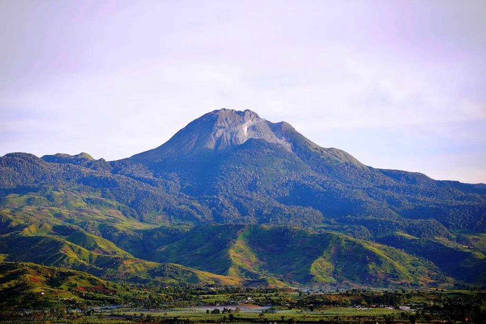

PHILIPPINE'S AMAZING NATURES
Home
About
Contact
MINDANAO EXPLORATION

Mount Apo
Short History: Long considered sacred by indigenous groups, it is now a protected natural park.
Coordinates: 6.9870° N, 125.2700° E
Highlights: Highest peak
Learn More...
© 2026 Nature website PH. All rights reserved.